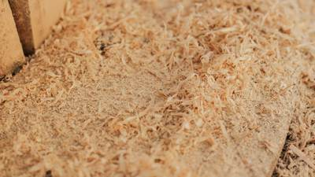
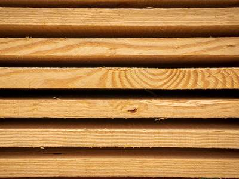

Eucalipto
- Pontón para estiba
- Tablas para tarimas
Propuesta de demoSerrería en Arzúa (A Coruña)
Empresa familiar con más de 50 años de experiencia en el aserrado de pino y, sobre todo, eucalipto. Pontón, tabla, tablón, astilla y serrín, y cortes a medida.
serreria@maderaslopez.es As Hortas - Dombodán, 15819 Arzúa (A Coruña)
Madera aserrada de eucalipto y de pino, más la astilla y el serrín. En esta página no hay medidas ni precios: se consultan con la serrería.

Si tus necesidades no se ajustan a las medidas estándar, consúltanos.

Tres pasos, en este orden.
El producto, la madera y las medidas. Si no encajan con una medida estándar, dilo: también hay cortes a medida.
Al 981 51 82 51 o a serreria@maderaslopez.es.
La respuesta la da Maderas López directamente. En esta página no hay precios, plazos ni stock.